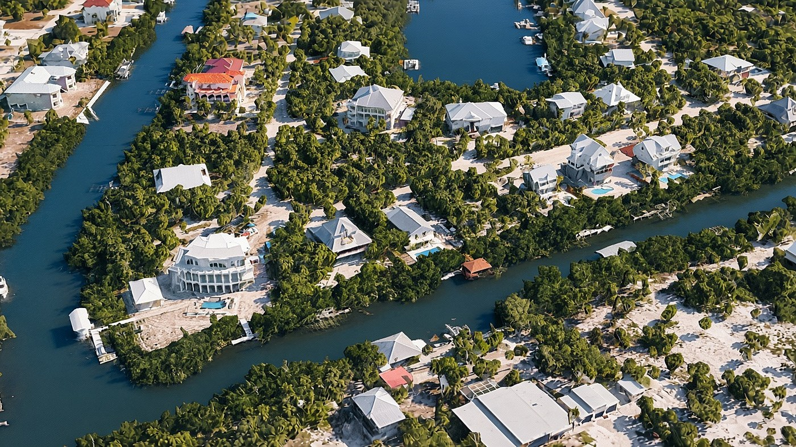

Draft preview for review. Not published. New Page for /explore/englewood/little-gasparilla-island/. Goes live 2026-12-06. Images shown from local copies. Rollout batch
Little Gasparilla Island, Placida: Florida's Bridgeless Beach Island

Explore · Englewood · Little Gasparilla Island
Little Gasparilla Island has no bridge and no road network. You arrive by boat, walk sand paths to the Gulf, and live on island time.
That is exactly why buyers want it. This page covers how the island works, what the county record shows, and what to check before you buy. For the mainland side, see Explore Englewood, and for the island just north, see Palm Island.
The short version
Boat access only. No bridge; water taxi or your own boat.
Sand paths. No dedicated road network on the island.
Off the grid in places. Septic, cisterns or wells, and a private water utility.
Beach homes. Median qualified home sale about $724,000 in 2025 and 2026.
388
island addresses on the roll
147
single-family homes
135
condo units
$724,000
median qualified home sale
Source: Charlotte County Property Appraiser, parcel file and subdivision list (downloaded Nov 20, 2026); Charlotte County, Little Gasparilla Island Community Plan.
Location
Where Little Gasparilla Island is
The south end of the Placida barrier islands.
Little Gasparilla Island is a barrier island off Placida, in Charlotte County. It is the southernmost island in the chain formed by Don Pedro, Palm Island, and Little Gasparilla. It touches Don Pedro Island to the north, but the state park there allows only foot traffic, so no vehicles cross over. The island faces the Gulf of Mexico on the west and Placida Harbor on the east.
Source: Charlotte County, Little Gasparilla Island Community Plan.
Getting there
Life without a bridge
Everything arrives by boat.
The county plan names the places most people launch from: the county boat ramp across Placida Sound and several Placida marinas. Docks on the island belong to waterfront owners, owner groups, or the condo associations, and there are no public docks. Groceries, building materials, and furniture all come over by boat, which affects what it costs to build or renovate.
Source: Charlotte County, Little Gasparilla Island Community Plan.

Raised homes and sand paths on the island's interior.
Homes
Little Gasparilla Island homes for sale
Beach cottages, raised homes, and two condo communities.
The county roll lists 388 island addresses: 147 single-family homes, 135 condo units, and 41 vacant lots. The county plan names the two condo communities as Placida Beach and Hideaway Bay. The median single-family home has about 1,152 square feet of living area, and 64 percent carry the county's waterfront flag. Vacant lots traded at a median of about $79,000 across 7 qualified sales.
| Measure | Value |
|---|---|
| Island addresses | 388 |
| Single-family homes | 147 |
| Condo units | 135 |
| Vacant lots | 41 |
| Median county just value, homes | $436,000 |
| Middle half of home just values | $280,000 to $597,000 |
| Qualified home sales, 2025 and 2026 | 18 (median $724,000) |
County figures come from the Charlotte County Property Appraiser's public parcel file (downloaded November 20, 2026). Just value is the county's market value estimate on the latest certified roll, not an appraisal or a list price. Sale figures use each parcel's most recent recorded sale when that sale was qualified and dated 2025 or 2026.
Source: Charlotte County Property Appraiser, parcel file and subdivision list (downloaded Nov 20, 2026).
Before you buy
Five checks on Little Gasparilla Island
Island homes need island homework.
Inspections and insurance take more planning here than on the mainland.
Water and septic
Confirm the water source and septic condition.
Dock and parking
Know where you will keep a boat and park a car on the mainland.
Flood and wind
Get FEMA zone, elevation, and insurance quotes early.
Building costs
Boat delivery adds to any renovation or new build.
Rentals
Check association and county rules before counting on rental income.
Our insurance guide and lot-to-build guide cover the basics.
Source: FEMA Flood Map Service Center; Charlotte County, Little Gasparilla Island Community Plan.
FAQs
Little Gasparilla Island: common questions
How do you get to Little Gasparilla Island?
Only by boat. Charlotte County's community plan describes Little Gasparilla Island as a bridgeless barrier island accessible only by watercraft and emergency vehicles. Owners and guests use private boats or a water taxi from mainland marinas in Placida.
Are there roads or cars on Little Gasparilla Island?
There is no dedicated road network. The county plan says travel on the island uses a network of unimproved paths, and most people get around on foot or by golf cart.
How big is Little Gasparilla Island?
The county plan describes it as about 2.5 miles long and a quarter to a half mile wide, with frontage on both the Gulf of Mexico and Placida Harbor.
What do homes on Little Gasparilla Island cost?
The median county just value of a single-family home is about $436,000. The 18 qualified single-family sales in 2025 and 2026 had a median of about $724,000.
What utilities does the island have?
Per the county plan, electricity comes from the power company, water comes from cisterns, wells, or a private reverse osmosis utility, and homes use septic systems. Fire service comes from an island volunteer department. Confirm current service for any home you consider.
Weighing the move?
Start with our straight answer to Is Punta Gorda a good place to live? It covers the climate, storms and insurance, schools, healthcare, airports, beaches, and every neighborhood guide in one place.
Thinking about island life?
We can walk you through island sales, docks, and insurance. Call or text The Helgemo Team at (941) 770-2275.
The office is at 320 Cross Street, Punta Gorda, Florida 33950. You can also meet Brian Helgemo or read more about the team.
Sources: Charlotte County Property Appraiser, parcel file and subdivision list (downloaded Nov 20, 2026); Charlotte County, Little Gasparilla Island Community Plan; FEMA Flood Map Service Center. Checked November 20, 2026.